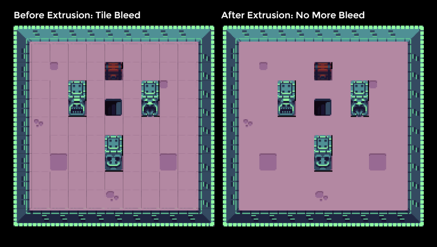
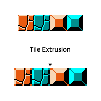
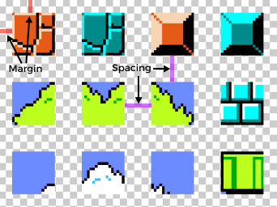

A CLI and JS library to extrude tiles in tilesets to avoid "bleeding" issues where tiles are rendered with the wrong color at the edges of tiles.


You can read more about the bleeding problem and solution here. The TLDR is that there are many ways this type of rendering artifact can occur, e.g. from pixels being incorrectly blended when the edge of a tile in a tilemap texture is rendered. This CLI app handles both tilesets with and without margin & spacing. Check out my blog post series about building modular worlds with tilemaps for more information on using tilemaps and extruding tiles.
There are two ways to use the tool to extrude a tileset image. If you just need to extrude some tilesets, you can use it as a command line tool. If you need to do something that requires more control (like integrating tile-extruder into build pipeline), you can use it as a JS library.
Make sure you have node installed and then run:
npx tile-extruder [args]
(You can also install tile-extruder globally with npm install --global tile-extruder and then you can run it via tile-extruder [args].)
Here is an example usage for extruding a 8 x 16 tile size tileset with no margin or spacing:
tile-extruder --tileWidth 8 --tileHeight 16 --input ./tilesets/borders-tileset.png --output ./tilesets/borders-tileset-extruded.png
Here is an example usage for a 16 x 16 tile size tileset with 5px margin and 10px spacing:
tile-extruder --tileWidth 16 --tileHeight 16 --margin 5 --spacing 10 --input ./tilesets/mario-tileset.png --output ./tilesets/mario-tileset-extruded.png
Additional usage information:
A small CLI to extrude tiles. Use --help for more information.
Options:
-V, --version output the version number
-w, --tileWidth <integer> tile width in pixels
-h, --tileHeight <integer> tile height in pixels
-i, --input <path> the path to the tileset you want to extrude
-o, --output <path> the path to output the extruded tileset image (default: inputPath where
filename is extended with '_extruded')
-c, --color [hex=0xffffff00] RGBA color to use for the background color, only matters if there's margin or
spacing (default: transparent white)
-m, --margin [integer=0] number of pixels between tiles and the edge of the tileset image (default: 0)
-s, --spacing [integer=0] number of pixels between neighboring tiles (default: 0)
-e, --extrusion [integer=1] number of pixels to extrude by (default: 1)
--help display help for command
A note on terminology, spacing is the number of pixels between neighboring tiles, while margin is the number of pixels between the edges of the image and the tiles. Or, more visually explained:

If you're reading this on npm/GitHub, you can read the documentation online here which includes API documentation. Also, see node examples folder for code.
Install the library as a dependency in your Node project:
npm install tile-extruder
This exposes three utility functions, which all extrude a given tileset image, but differ in terms of their output.
const {
extrudeTilesetToImage, // Saves an image to disk
extrudeTilesetToBuffer, // Returns image in a Buffer (compatible with libraries like imagemin)
extrudeTilesetToJimp // Returns the underlying Jimp image object
} = require("tile-extruder");
To save an extruded tileset to disk:
const { extrudeTilesetToImage } = require("tile-extruder");
async function main() {
await extrudeTilesetToImage(16, 16, "./buch-tileset.png", "./buch-tileset-extruded.png");
}
main();
To obtain the extruded tileset as a Buffer and then minify it before saving using imagemin:
const { extrudeTilesetToBuffer } = require("tile-extruder");
const imagemin = require("imagemin");
const imageminPngquant = require("imagemin-pngquant");
const fs = require("fs");
async function main() {
const buffer = await extrudeTilesetToBuffer(16, 16, "./buch-tileset.png");
const minifiedBuffer = await imagemin.buffer(buffer, {
plugins: [
imageminPngquant({
quality: [0.6, 0.8] // See https://github.com/imagemin/imagemin-pngquant
})
]
});
fs.writeFileSync("./buch-tileset-extruded-minified.png", minifiedBuffer);
}
main();
This tool was built for a Phaser & Tiled project, so here's how to integrate with that pipeline.
If you've already built a map in Tiled with a non-extruded tileset and are looking to replace it with an extruded tileset, you've got a couple options:
// Parameters: name in Tiled, phaser cache key, tile width, tile height, margin, spacing
const tileset = map.addTilesetImage("tileset", "tileset-extruded", 48, 48, 1, 2);
Note: you'll have to adjust your margin & spacing because of the extrusion. If you had no margin & spacing, then a tileset that has been extruded by 1px will have a margin of 1px and a spacing of 2px.
Tips:
extrudeTilesetToImage, extrudeTilesetToBuffer,extrudeTilesetToJimp - to make it easier to integrate the library into other tools like create-phaser-app.Thank you to the following community contributors: